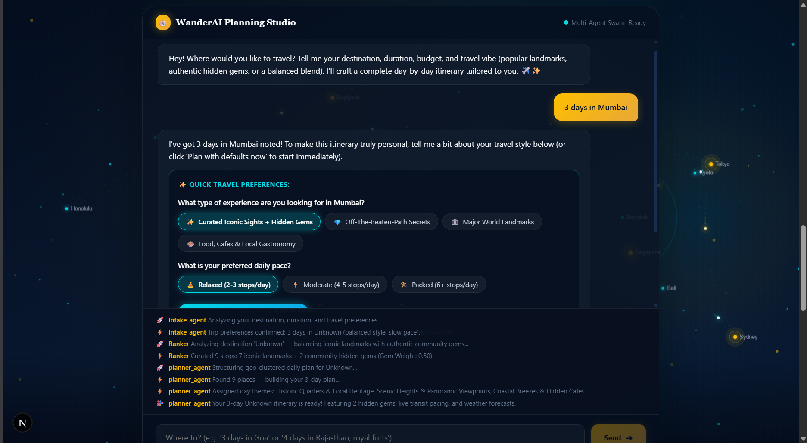

An autonomous conversational multi-agent system crafting complete, personalized day-by-day itineraries for any global or regional destination — balancing iconic landmarks, authentic Reddit hidden gems, live weather, budget, and spatial coherence.

Most AI travel tools are superficial wrappers around a single LLM prompt. They hallucinate non-existent attractions, ignore geographic distances (causing erratic zig-zag travel across cities), recommend generic tourist traps, and fail to adapt to unpredictable real-time weather and budget constraints.
WanderAI replaces simple prompt wrappers with an autonomous multi-agent state machine (LangGraph). Three dedicated agents (Intake, Ranker, Planner) extract structured travel slots, scrape authentic community signals from Reddit and travel blogs via custom sentiment scoring, cluster POIs geographically with K-means++, and attach live Open-Meteo forecasts and Leaflet map routes.
Detects underspecified prompts (e.g., "3 days in Goa") and dynamically asks targeted follow-ups (vibe, pace, dietary preferences) before executing the pipeline.
Cross-references Google Places popularity with Reddit and travel blog sentiment via VADER and Tavily search to surface authentic, under-the-radar spots.
Clusters attractions by spatial distance with maximally spread centroid initialization, ensuring each day explores a logically grouped neighborhood without criss-cross transit.
Attaches live Open-Meteo daily weather forecasts and calculates sequential haversine transit durations between consecutive itinerary stops.
Renders day-wise colored markers, transit polylines, and popups on CartoDB Dark Matter tiles with zero credit-card API dependencies.
Server-Sent Events (SSE) stream live agent progress step-logs into the Next.js 16 UI and support instant publication-quality PDF export.
intake_node.py — Extracts destination, duration, budget, and generates clarifying questionsranker_node.py — Concurrent fetch of OpenTripMap landmarks and Reddit/Tavily community gemsplanner_node.py — K-means++ clustering (k = num_days) and Gemini day-theme generationscoring.py — Log-normalized mathematical formula for niche score computation (7/7 unit tests passing)frontend/src/ — Next.js 16 App Router with React 19, TypeScript, and Nocturnal Voyager design systemMapView.tsx — Leaflet interactive map with custom POI icon markers and day filter togglesbackend/app/tools/ — Haversine transit estimator, Open-Meteo weather client, and versioned ChromaDB cache (v4)backend/app/main.py — Async FastAPI server with SSE streaming endpoints and ReportLab PDF exportDeterministic state machine orchestration with SQLite checkpoints and high-speed async endpoints.
React 19 frontend with server-sent events, real-time map integration, and glassmorphism styling.
Google AI Studio for day narratives paired with Groq for sub-second slot extraction.
Versioned on-disk vector cache (v4) and public community discussions for genuine hidden gem retrieval.